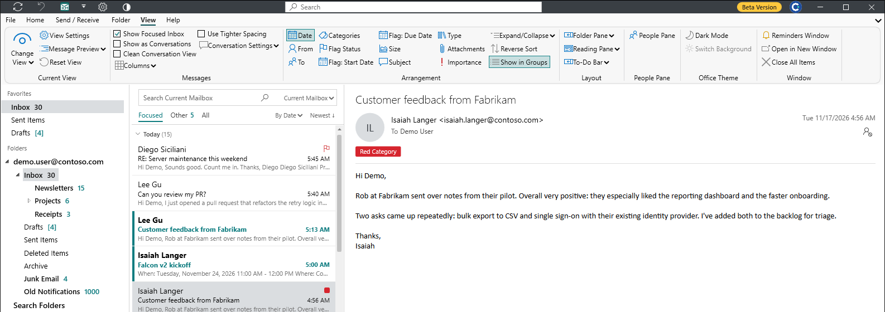
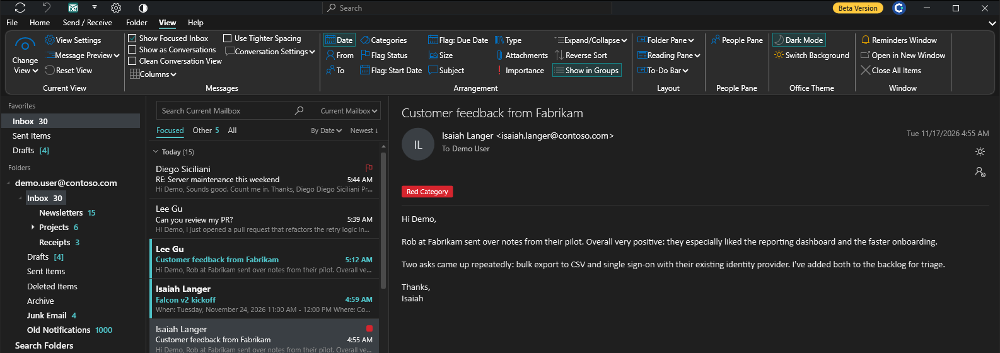
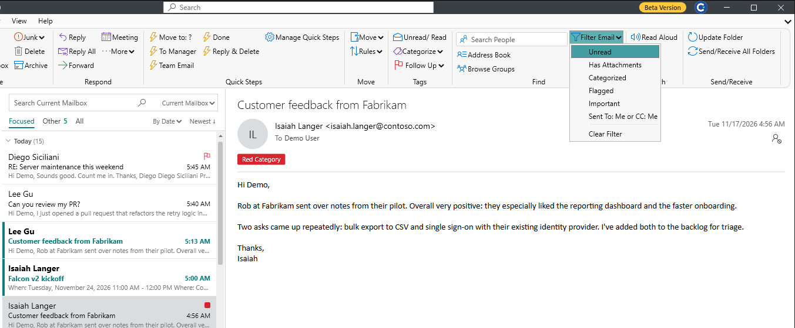
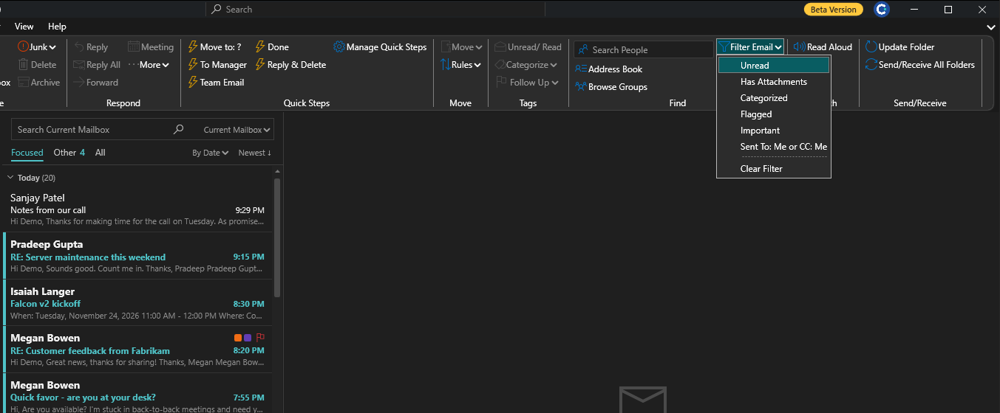

- Conversations, including your replies from Sent Items, Conversation Settings, and Clean Conversation View to read a whole thread like a chat.
- Focused Inbox with Focused, Other and All, and Always Move to Other / Focused.
- Arrange and group by date, sender, subject, size, flag, categories, importance and more; collapsible groups and Reverse Sort.
- Change View, View Settings and Manage Views: Compact, Single and Preview, columns, message preview lines, and conditional formatting.




- Categories with colors, Quick Click and shortcut keys; follow-up flags and reminders on messages.
- Filter Email: Unread, Has Attachments, Categorized, Flagged, Important, Sent To Me.
- Quick Actions: point at a message in the list for Flag and Delete buttons on it, or choose your own (Archive, Mark as Read, Move to Folder).




- Ignore, Clean Up (conversation, folder, folder and subfolders) and Archive. Clean Up has Outlook’s options: the folder cleaned-up messages go to, recreating the folder hierarchy there, and leaving unread, categorized, flagged or digitally signed messages where they are.
- Undo for moves, deletes, read/unread, flags and categories, up to 20 steps.
- Recover Deleted Items, Delete All, Copy Folder, Save Folder As and Mark All as Read.
- Attachments: preview pictures, text, PDFs, attached messages, and with Office installed Excel and PowerPoint files in the reading pane; Save All; Remove Attachment.
- The People Pane with everyone on a message and their mail, attachments and meetings.
- Who’s available: a dot on the sender’s picture shows whether a co-worker is Available, Busy, Away or Offline in Teams.
- Voting buttons with View Tracking, Flag for Recipients, read receipts, message properties with internet headers, and Edit Message.
- Create an appointment or task from a message by dragging it onto Calendar or Tasks.
- Read Aloud with Windows’ voices, and zoom for the reading pane.
- Plain text mail tidied up: check Remove extra line breaks in plain text messages in File → Options → Mail, as in Outlook, and Restore line breaks in a message puts them back.
- Print in Outlook’s Memo Style with a preview, Quick Print, and Save As text, HTML or .eml.
- Mailbox Cleanup: mailbox size by folder, find old or large items, AutoArchive with settings for each folder, and Archive Old Mail for one folder.
Missing something you used in Outlook? Choose Help → Suggest a Feature in the app. Found a bug? Choose Help → Report a Bug.